← Index · ← Previous · Next →
Authors: Po-Chun Chang, Sabreen Hammouda, Yung-Hsiang Tung, Yishui Zhou, Iurii Kibalin, Bachir Ouladdiaf, Chao-Hung Du, Yixi Su
Type: experiment · Category: strongly correlated electrons · PDF: https://arxiv.org/pdf/2605.09729v1
Analysis basis: abstract only; PDF text extraction failed or PDF unavailable
Summary. Researchers successfully grew high-quality crystals of the 2D ferromagnet Fe3GaTe2 using chemical vapour transport. They discovered that a contraction in the c-axis enhances the Fe-Fe exchange interaction, leading to a much higher Curie temperature than the well-known Fe3GeTe2. This makes FGaT a promising material for high-temperature 2D spintronics.
Why it may be interesting. not directly relevant
Main problem. The study aims to characterize the structural and magnetic properties of the 2D van der Waals ferromagnet Fe3GaTe2 (FGaT) and understand the origin of its high Curie temperature.
Main result. FGaT was grown with high purity, showing a hexagonal structure with a Curie temperature of 355-360 K, which is significantly higher than its counterpart Fe3GeTe2 due to a contracted c-axis and strengthened Fe-Fe exchange interaction.
Method. Single crystals were grown using the chemical vapour transport method, and structural/magnetic properties were analyzed via single-crystal X-ray and neutron diffraction.
Model / system. The system is the two-dimensional van der Waals ferromagnet Fe3GaTe2 (FGaT), featuring Fe ions in two inequivalent sites (Fe(i) and Fe(ii)) within a hexagonal P63/mmc crystal structure.
Key observables. Magnetic moments of Fe sites, Curie temperature (Tc), lattice parameters (a and c axes), and interatomic distances.
Important parameters / regimes. Curie temperature (355-360 K), magnetic moments (1.9(2) uB and 1.4(6) uB), and the c-axis contraction.
Paper structure. The paper describes the crystal growth method, followed by structural characterization via X-ray diffraction, magnetic characterization via neutron diffraction, and a comparative analysis with Fe3GeTe2.
High-quality single crystals of the two-dimensional van der Waals ferromagnet Fe$_3$GaTe$_2$ (FGaT) were successfully grown using the chemical vapour transport method, which effectively reduced surface impurities compared with conventional self-flux growth. Structural and magnetic characterizations were performed using single-crystal X-ray and neutron diffraction. The results confirm that FGaT crystallizes in the hexagonal $P6_3/mmc$ structure, with Fe occupying two inequivalent sites (Fe$^{i}$ and Fe$^{ii}$), where the magnetic moment of Fe$^{i}$ [1.9(2) $μ_B$] is larger than that of Fe$^{ii}$ [1.4(6) $μ_B$]. The magnetic easy axis is oriented along the $c$ axis and the Curie temperature ($T_C$) is approximately 355-360 K. Compared with Fe$_3$GeTe$_2$ (FGT), FGaT exhibits a slightly expanded $a$ axis and a contracted $c$ axis, resulting in a reduction in the Fe$^{i}$-Fe$^{ii}$ interatomic distance along the $c$ axis. This pronounced contraction could strengthen the Fe$-$Fe exchange interaction, which is believed to be the key factor responsible for the significantly higher $T_C$ in FGaT relative to FGT.
Authors: Cunyuan Jiang
Type: theory · Category: disordered systems and neural networks · PDF: https://arxiv.org/pdf/2605.09436v1
Analysis basis: abstract only; PDF text extraction failed or PDF unavailable
Summary. This paper proposes a model to explain why amorphous solids exhibit an anomalous vibrational density of states known as the Boson peak. It concludes that the peak is caused by variations in how many connections each node has, rather than variations in the strength of the connections themselves. This simplifies the understanding of complex disordered structures.
Why it may be interesting. not directly relevant
Main problem. Identifying the microscopic origin of the Boson peak (BP), which is an anomalous excess in the vibrational density of states (DOS) found in amorphous solids.
Main result. The Boson peak originates solely from fluctuations in coordination numbers, whereas fluctuations in spring strength primarily contribute to damping and have minimal impact on low-frequency DOS.
Method. The authors employ a non-analytic model based on the scalar dynamical matrix of a network.
Model / system. A network of nodes and springs characterized by two types of disorder: fluctuations in spring strength and fluctuations in coordination numbers (the number of springs connected to a node).
Key observables. Vibrational density of states (DOS) and the Boson peak (BP).
Important parameters / regimes. Fluctuation of spring strength and fluctuation of coordination numbers.
Assumptions / limitations. The model uses a scalar dynamical matrix approach for a network of springs and nodes.
Paper structure. The paper proposes a model, classifies disorder into two factors, and analyzes the resulting vibrational density of states to isolate the effects of coordination number versus spring strength fluctuations.
We proposed a non-analytic model to explain the microscopic origin of the anomalous vibrational density of states (DOS), the Boson peak (BP), in amorphous solids based on the scalar dynamical matrix of a network with springs and nodes. We argue that disorder can be classified into two factors: fluctuation of spring strength and fluctuation of coordination numbers (the number of springs connected to a node). The results suggest that BP originates solely from fluctuation of coordination numbers, while the fluctuation of spring strength only contributes to the effect of damping and has very limited effect on low frequency DOS. This work converts complexity into simplicity and provides a direct answer to the puzzle of the microscopic origin of BP in amorphous solids.
Authors: Sangeeta Rajpurohit, Liang Z. Tan, Tadashi Ogitsu, Peter E. Blöchl
Type: theory · Category: strongly correlated electrons · PDF: https://arxiv.org/pdf/2605.09713v1
Analysis basis: abstract only; PDF text extraction failed or PDF unavailable
Summary. This paper proposes a new non-magnetic insulating phase in rare-earth nickelates driven by Jahn-Teller distortions. By using a multi-orbital tight-binding model, the authors show that the metal-insulator transition can occur independently of magnetic ordering. This provides new insight into the complex interplay of orbital, charge, and lattice degrees of freedom in correlated oxides.
Why it may be interesting. not directly relevant
Main problem. The study investigates the competition between different insulating phases in rare-earth nickelates (RNiO3) driven by the interplay of electron-phonon coupling and electron-electron interactions.
Main result. The authors predict a new metastable non-magnetic insulating phase characterized by charge and orbital ordering, demonstrating that magnetic order is not a prerequisite for the metal-insulator transition in these materials.
Method. The researchers use a three-dimensional multi-orbital tight-binding model with parameters extracted from hybrid-functional DFT calculations, followed by self-consistent calculations.
Model / system. A three-dimensional multi-orbital tight-binding model for rare-earth nickelates (RNiO3) that incorporates charge, spin, orbital, and lattice degrees of freedom, specifically focusing on the breathing and Jahn-Teller modes.
Key observables. Charge disproportionation (Ni2+ and Ni4+ states), spin polarization, and orbital occupancy.
Important parameters / regimes. On-site interactions (U and J), Hund's exchange (3J), and electron-phonon coupling to breathing and Jahn-Teller modes.
Assumptions / limitations. The model parameters are specifically calibrated using DFT results from the small-bandwidth LuNiO3 system.
Paper structure. The paper introduces a multi-orbital tight-binding model, describes the parameter extraction from DFT, analyzes the competition between three insulating phases, and concludes with the prediction of a new non-magnetic phase.
We propose a three-dimensional multi-orbital tight-binding model for rare-earth nickelates RNiO$_3$ that treats charge, spin, orbital, and lattice degrees of freedom on equal footing. All model parameters, including the on-site interactions $U$ and $J$ and the electron-phonon (el-ph) coupling to the breathing mode, are extracted from hybrid-functional DFT calculations for the small-bandwidth nickelate LuNiO$_3$. The model describes three competing insulating phases governed by the interplay of $U{-}3J$ and el-ph coupling to the breathing and Jahn--Teller (JT) modes. For large $U{-}3J$, the insulating state is stabilized by local JT distortions on high-spin Ni$^{3+}$ sites. For smaller $U{-}3J$, the system undergoes charge disproportionation, $2\mathrm{Ni}^{3+}\rightarrow\mathrm{Ni}^{2+}+\mathrm{Ni}^{4+}$, resulting in the spin-polarized charge-ordered state observed experimentally below the Néel temperature in small-bandwidth RNiO$_3$. When the JT energy on the Ni$^{2+}$ site exceeds Hund's exchange $3J$, a distinct charge- and orbital-ordered insulating phase emerges in which the two $e_g$-electrons occupy the same orbital with opposite spin. The stability of this phase is further confirmed by self-consistent calculations within the full three-dimensional tight-binding model. This newly predicted metastable state, characterized by JT distortions in a nonmagnetic charge-ordered RNiO$_3$ phase, shows that the onset of magnetic order is not required for the metal-insulator transition in RNiO$_3$.
Authors: Yuhao Li, Shengchao Liu
Type: theory · Category: disordered systems and neural networks · PDF: https://arxiv.org/pdf/2605.08368v1
Analysis basis: abstract only; PDF text extraction failed or PDF unavailable
Summary. The paper proposes a new way to distinguish between LLM post-training methods that simply highlight existing capabilities and those that actually create new ones. By using a free-energy perspective, it provides a mathematical framework to analyze whether training expands the model's reachable behavioral space.
Why it may be interesting. not directly relevant
Main problem. The paper addresses the lack of a precise distinction between whether LLM post-training (SFT and RL) merely increases the probability of existing behaviors (elicitation) or expands the model's reachable behavior space (creation).
Main result. The authors propose a formal distinction based on 'accessible support,' arguing that post-training is 'elicitation' if it reweights behaviors within the pretrained model's existing support and 'creation' if it expands that support.
Method. The authors utilize a free-energy framework to view SFT and RL as processes of reweighting a pretrained reference distribution using different external signals (demonstrations vs. rewards).
Model / system. The study focuses on Large Language Models (LLMs) treated as probability distributions, specifically analyzing the dynamics of supervised fine-tuning (SFT) and reinforcement learning (RL) during post-training.
Key observables. The notion of 'accessible support' (the set of behaviors practically reachable under finite budgets) and the change in the probability distribution of behaviors.
Important parameters / regimes. The 'finite budget' for producing behaviors and the proximity of the post-training update to the base model's reference distribution.
Assumptions / limitations. The framework assumes that post-training can be modeled as a reweighting of a pretrained reference distribution and that the update remains relatively close to the base model.
Paper structure. The paper introduces the distinction between elicitation and creation, defines 'accessible support' as an operational metric, develops a free-energy-based theoretical framework for SFT and RL, and concludes by redefining the central question of post-training research.
Debates about large language model post-training often treat supervised fine-tuning (SFT) as imitation and reinforcement learning (RL) as discovery. But this distinction is too coarse. What matters is whether a training procedure increases the probability of behaviors the pretrained model could already produce, or whether it changes what the model can practically reach. We argue that post-training research should distinguish between capability elicitation and capability creation. We make this distinction operational by introducing the notion of accessible support: the set of behaviors that a model can practically produce under finite budgets. Post-training that reweights behaviors within this support is capability elicitation; whereas changing the support itself corresponds to capability creation. We develop this argument through a free-energy view of post-training. SFT and RL can both be seen as reweighting a pretrained reference distribution, only with different external signals. Demonstration signals define low-energy behavior for SFT, and reward signals define low-energy behavior for RL. When the update remains close to the base model, the main effect is local reweighting, not capability creation. Within this framework, the central question is no longer whether post-training is framed as SFT or RL, but whether it reweights behaviors already within reach, or instead expands the model's reachable behavioral space through search, interaction, tool use, or the incorporation of new information.
Authors: Dawei Ding, Yu Liu, Zi-Wen Liu
Type: theory · Category: quantum information and computing · PDF: https://arxiv.org/pdf/2605.10783v1
Analysis basis: abstract only; PDF text extraction failed or PDF unavailable
Summary. This paper resolves mathematical inconsistencies in the KAK decomposition used in quantum computing. It clarifies that the standard 'Weyl chamber' representation only applies to projective-local equivalence and provides a rigorous framework for determining the uniqueness of gate decompositions.
Why it may be interesting. This provides a rigorous mathematical foundation for the classification of quantum gates and the understanding of local equivalence, which is critical for circuit optimization and gate synthesis.
Main problem. The mathematical foundations of the KAK decomposition, specifically regarding the precise conditions for decomposition and the characterization of equivalence classes under K-multiplication, are incomplete and inconsistent in existing literature.
Main result. The authors provide a rigorous Lie-theoretic theory for KAK decomposition in connected compact semisimple Lie groups and distinguish between double coset equivalence and projective equivalence, correcting the misconception that local equivalence classes in SU(4) are represented by the standard Weyl chamber.
Method. The paper employs Lie theory and mathematical analysis of Cartan decompositions to derive a general KAK decomposition theorem and analyze equivalence classes for SU(4).
Model / system. The study focuses on the group-theoretic structure of SU(4) and connected compact semisimple Lie groups, which serve as the mathematical framework for quantum gates and circuits.
Assumptions / limitations. The derivation is specifically applied to connected compact semisimple Lie groups.
Paper structure. The paper introduces the KAK decomposition, provides a general proof for connected compact semisimple Lie groups, derives the specific case for SU(4), distinguishes between two types of equivalence classes, and establishes a theory for uniqueness.
The KAK decomposition is a fundamental tool in Lie theory and quantum computing. Despite its widespread use, the mathematical foundations remain incomplete, particularly regarding the precise conditions for the decomposition and the characterization of equivalence classes under multiplication by elements of $K$. Here, we present a mathematical theory of the KAK decomposition for connected compact semisimple Lie groups and derive the decomposition for $\mathrm{SU}(4)$. In particular, we clarify the relationship between various definitions of a Cartan decomposition in the literature and give a complete proof of a general KAK decomposition theorem. We then distinguish two distinct notions of KAK equivalence classes, double coset equivalence and projective equivalence, thereby addressing mathematical inconsistencies regarding KAK classification in the literature. Specifically, for $\mathrm{SU}(4)$, we show that local equivalence classes under multiplication by $\mathrm{SU}(2)\otimes \mathrm{SU}(2)$ are geometrically represented not by the usual "Weyl chamber" as claimed in the existing literature. Instead, the "Weyl chamber" is only recovered by the projective-local equivalence which disregards global phases. We develop a systematic theory for determining equivalence and uniqueness for both notions of equivalence. Our work establishes a rigorous Lie-theoretic foundation for the theory of quantum gates and circuits.
Authors: Gilad Kishony, Avi Elazari, Ron Cohen, Lior Gazit
Type: theory · Category: quantum information and computing · PDF: https://arxiv.org/pdf/2605.09671v1
Analysis basis: abstract only; PDF text extraction failed or PDF unavailable
Summary. This paper introduces an efficient algorithm to optimize the synthesis of quantum circuits by intelligently choosing between different single-qubit rotation approximation methods. By mapping the optimization to a 1D Ising model, the authors significantly reduce the gate count required for fault-tolerant quantum computing. This approach offers a practical way to improve the efficiency of quantum algorithms on near-term and fault-tolerant hardware.
Why it may be interesting. not directly relevant
Main problem. Optimizing the allocation of single-qubit rotation approximation strategies (Diagonal vs. Magnitude approximation) within a quantum circuit to minimize the total T-count.
Main result. The authors present a linear-time algorithm that achieves an optimal approximation configuration, resulting in an average 26% reduction in the total T-count compared to standard diagonal approximation.
Method. The problem of choosing between approximation strategies is mapped to a classical 1D Ising model with a spatially varying field, which is then solved by minimizing the Hamiltonian energy.
Model / system. The study focuses on the transpilation of arbitrary quantum circuits into a universal Clifford+T gate set, specifically addressing single-qubit Pauli rotations.
Key observables. T-count (gate count) and approximation error (precision epsilon).
Important parameters / regimes. Target precision epsilon, T-count, and the error-absorption capacity of neighboring gates.
Assumptions / limitations. The algorithm assumes that residual errors from Magnitude Approximation can be absorbed into neighboring gates within a complete circuit.
Paper structure. The paper introduces the challenge of circuit transpilation, defines the two approximation strategies, maps the optimization problem to a 1D Ising model, presents the linear-time algorithm, and benchmarks the results against standard methods using random circuits.
Fault-tolerant quantum computing typically requires the transpilation of arbitrary quantum circuits into a finite, universal gate set, such as Clifford+T. As a baseline, Diagonal approximation can be used for synthesizing single-qubit Pauli rotations, yielding an approximating sequence with $T$-count that equals $3 \log_2(1/ε)$ for a target precision $ε$. Magnitude Approximation can reduce the $T$-count to only $1 \log_2(1/ε)$ by allowing large residual errors, which are rotations about orthogonal axes. Within a complete quantum circuit, these residual errors can then be absorbed into neighboring gates before they are approximated themselves. Determining the optimal allocation of approximation strategies within a large, multi-qubit circuit presents a significant combinatorial challenge. In this work, we present a linear-time algorithm that guarantees an optimal solution to this problem. We demonstrate that the issue of delegating Magnitude versus Diagonal approximation across a circuit maps formally to a classical 1D Ising model with a spatially varying field. By minimizing the energy of this Hamiltonian, we identify the optimal approximation configuration for each rotation without exponential overhead. Benchmarking our method against standard diagonal approximation on random quantum circuits, we observe an average reduction of 26\% in the total approximating circuit gate count, offering a significant efficiency gain for the implementation of quantum algorithms on near-term and fault-tolerant architectures.
Authors: Yamato Honda, Justin Kaidi, Ippo Orii
Type: theory · Category: other · PDF: https://arxiv.org/pdf/2605.10902v1
Analysis basis: full PDF text, analyzed in chunks
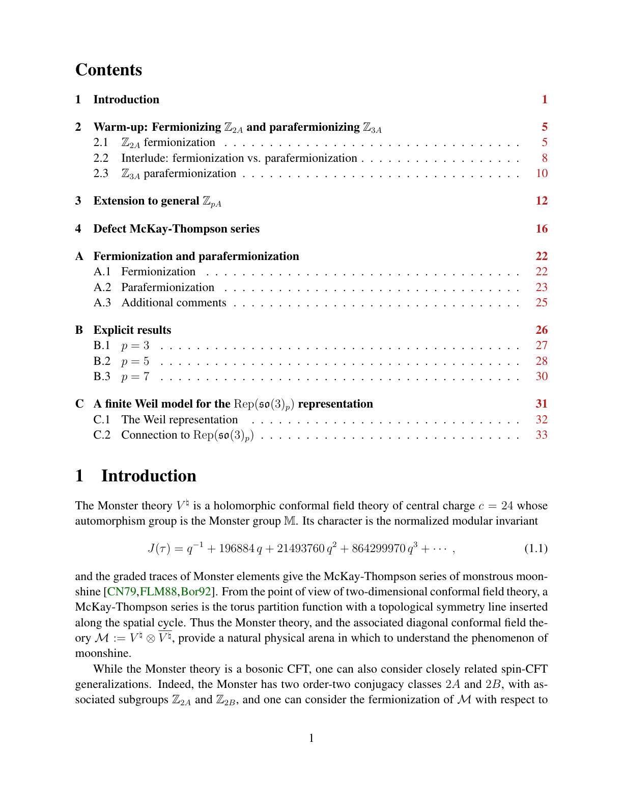
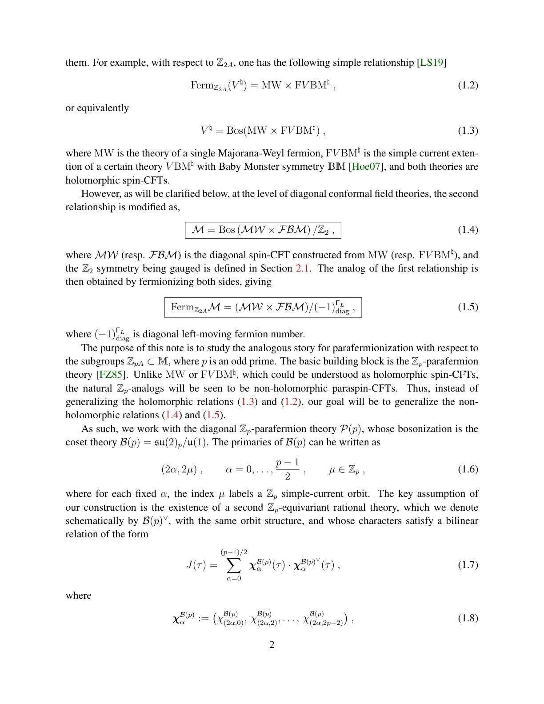
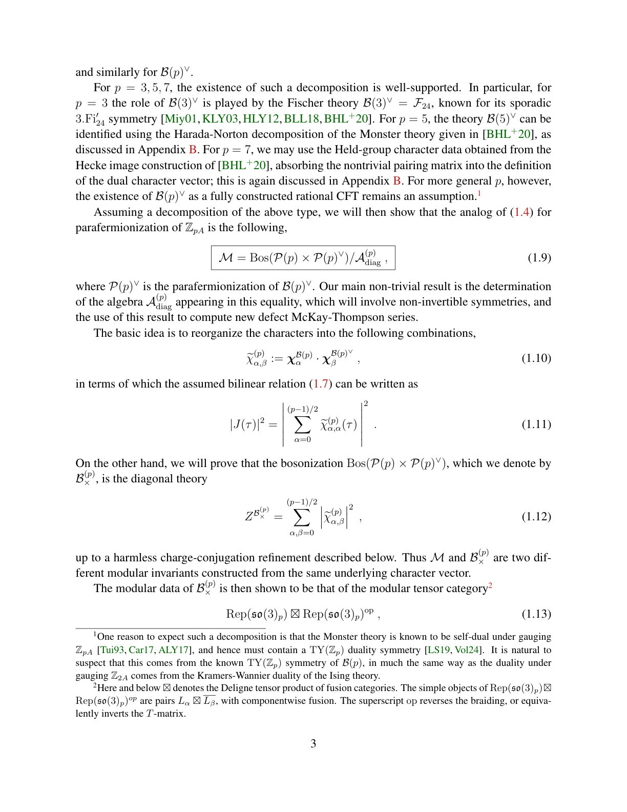
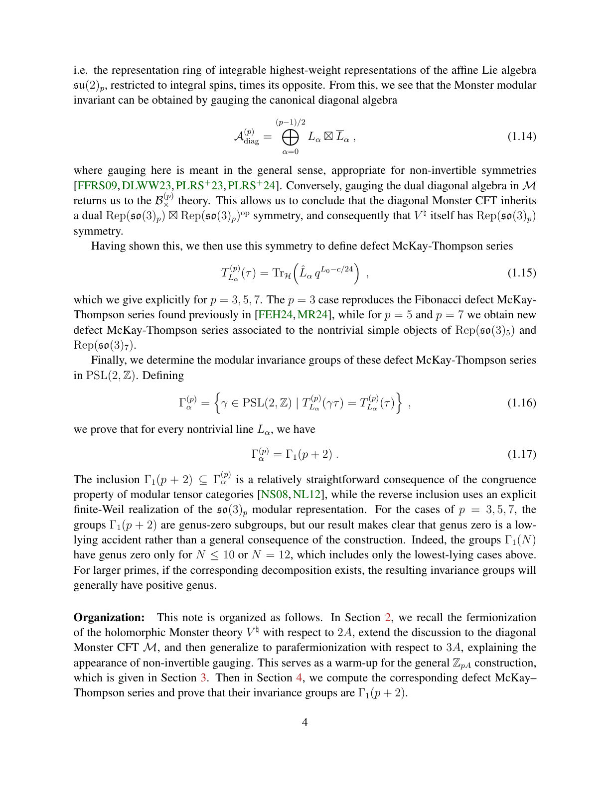
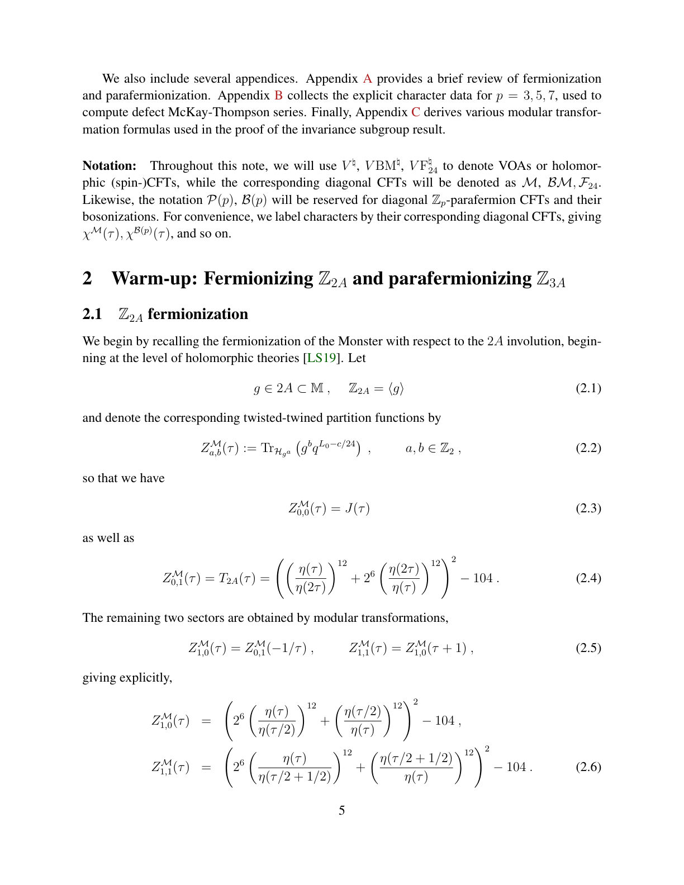
Summary. This paper extends the known relationship between the Monster CFT and fermionization to a more general parafermionization framework for odd primes. It identifies the specific non-invertible gauging process and proves that the resulting defect McKay-Thompson series are invariant under specific congruence subgroups.
Why it may be interesting. not directly relevant
Main problem. The paper investigates the generalization of the 'fermionization' of the Monster Conformal Field Theory (CFT) to a 'parafermionization' framework for odd primes p.
Main result. The authors prove that the Monster CFT can be obtained by a non-invertible gauging of a product theory involving Zp-parafermions, and identify the invariance subgroups of the associated defect McKay-Thompson series as Gamma_1(p+2).
Method. The study employs non-invertible gauging, character decomposition of the J-function, and modular transformation analysis using the Weil representation of PSL(2, Z).
Model / system. The primary system is the Monster Conformal Field Theory (V-natural) and its diagonal version, analyzed through the lens of Zp-parafermion theories and their bosonized counterparts.
Key observables. McKay-Thompson series (J-function), defect McKay-Thompson series, and modular invariance subgroups.
Important parameters / regimes. The odd prime p, which determines the level of the SO(3)_p symmetry and the specific congruence subgroups.
Assumptions / limitations. The existence of an appropriate dual theory P(p)v such that the Monster character can be decomposed into a bilinear relation.
Paper structure. The paper begins by generalizing fermionization to parafermionization, establishes the character decomposition for the Monster character, identifies the symmetry of the gauged theory, and concludes with a formal proof of the invariance subgroups for the defect series.
We study the parafermionization of the Monster CFT with respect to its $\mathbb{Z}_{pA}$ subgroups, with $p$ an odd prime. Under certain assumptions, we show that the parafermionization is equal to a non-invertible gauging of $\mathcal{P}(p) \times \mathcal{P}(p)^\vee$, where $\mathcal{P}(p)$ is the theory of $\mathbb{Z}_p$-parafermions and $\mathcal{P}(p)^\vee$ is an appropriate dual theory, with global symmetry characterized by the centralizer of $\mathbb{Z}_{pA}$. By tracking the symmetries of $\mathcal{P}(p) \times \mathcal{P}(p)^\vee$ through the non-invertible gauging, we argue that the diagonal Monster CFT has $\mathrm{Rep}(\mathfrak{so}(3)_p) \boxtimes \mathrm{Rep}(\mathfrak{so}(3)_p)^\mathrm{op}$ symmetry, and hence that the holomorphic Monster theory has symmetry $\mathrm{Rep}(\mathfrak{so}(3)_p)$. We then compute the defect McKay-Thompson series associated to these symmetries, and prove that their invariance subgroups are $Γ_1(p+2)$.
Authors: Linda Albanese, Andrea Alessandrelli, Adriano Barra, Silvio Franz, Federico Ricci-Tersenghi
Type: theory · Category: disordered systems and neural networks · PDF: https://arxiv.org/pdf/2605.10304v1
Analysis basis: abstract only; PDF text extraction failed or PDF unavailable
Summary. This paper explores a mechanism called 'partial annealing' in Hopfield-like neural networks, where slow pattern evolution helps decorrelate stored memories. This process reduces interference between patterns, effectively maximizing the network's storage capacity and improving retrieval in difficult regimes.
Why it may be interesting. not directly relevant
Main problem. Investigating how partially annealed dynamics, where neural dynamics are coupled to slowly evolving patterns, affects memory retrieval and pattern interference in associative neural networks.
Main result. Negative values of the parameter n induce pattern decorrelation, reducing interference and allowing the network to reach the maximal storage capacity of alpha_c = 1.
Method. The authors use Guerra's interpolation method to derive the free energy without analytical continuation and employ mean field Monte Carlo dynamics for numerical simulations.
Model / system. The study uses the Hopfield model as a benchmark, specifically within a two-temperature-two-timescale framework where neurons (fast) interact with slowly evolving synapses (slow).
Key observables. Free energy, storage capacity (alpha_c), and pattern decorrelation/interference levels.
Important parameters / regimes. The parameter n (tuning the separation of timescales and effective interaction) and the storage capacity alpha.
Assumptions / limitations. The system operates within a two-temperature-two-timescale framework where patterns evolve slowly compared to neural dynamics.
Paper structure. The paper introduces the partially annealed framework, applies Guerra's interpolation to derive the free energy, and uses Monte Carlo simulations to validate the theoretical findings regarding pattern decorrelation and retrieval capacity.
Using the Hopfield model as a benchmark case, the present work focuses on the investigation of partially annealed associative neural networks, wherein neural dynamics is coupled to slowly evolving patterns within the two-temperature-two-timescale framework. This setting inherently introduces a real parameter n, reminiscent of the number of replicas in the celebrated replica trick, that tunes the separation of timescales and the effective interaction between fast (i.e. the neurons) and slow (i.e. the synapses) degrees of freedom. By adapting Guerra's interpolation to the case, we derive the free energy without relying on analytical continuation. The obtained results demonstrate that negative values of n induce a progressive decorrelation of the stored patterns, thereby effectively reducing interference, promoting orthogonal configurations and ultimately conferring to the network the maximal storage alphac=1. Numerical simulations based on a mean field Monte Carlo dynamics have been employed to confirm this scenario and prove that partial annealing restores retrieval in challenging regimes, such as in the presence of biased patterns, outperforming standard decorrelation methods. These findings underscore the notion of partial annealing as an adaptive mechanism for enhancing memory organisation and retrieval in complex systems.
Authors: Arlind Kacirani, Betül Uralcan, Amir Haji-Akbari
Type: theory · Category: statistical mechanics · PDF: https://arxiv.org/pdf/2605.08617v1
Analysis basis: abstract only; PDF text extraction failed or PDF unavailable
Summary. This paper investigates how the sequence of activating different physical forces during alchemical simulations affects the accuracy of calculating water's chemical potential in salt solutions. It demonstrates that improper pathway design can lead to physically impossible results and recommends decoupling short-range and electrostatic interactions to ensure stability. This is crucial for the accurate thermodynamic modeling of ionic liquids and electrolytes.
Why it may be interesting. not directly relevant
Main problem. The reliability and convergence of alchemical free energy calculations for the chemical potential of water in electrolytes are sensitive to the chosen insertion pathway.
Main result. Simultaneously activating van der Waals and electrostatic interactions leads to unphysical free energy estimates due to premature electrostatic attraction; activating van der Waals interactions before electrostatics ensures more consistent and physically plausible results.
Method. The study compares eight different alchemical insertion pathways that vary in the order and extent of coupling for van der Waals and Coulombic interactions.
Model / system. The system consists of water molecules being inserted into aqueous KCl solutions, focusing on the interaction between the water molecule and the ionic environment.
Key observables. Chemical potential of water and insertion free energy.
Important parameters / regimes. The order and extent of van der Waals and electrostatic coupling during the staged particle insertion process.
Assumptions / limitations. The study assumes that the thermodynamic insertion free energy should ideally be independent of the pathway, but focuses on the practical convergence issues in strongly interacting systems.
Paper structure. The paper introduces the problem of free energy calculation in electrolytes, describes the eight tested alchemical pathways, presents the findings regarding the errors in concurrent coupling, and concludes with recommendations for decoupled insertion protocols.
Accurate calculation of free energies and their derivatives is central to assessing the thermodynamic stability of molecular and particulate systems across length scales. Yet such quantities can be difficult to compute reliably in strongly interacting systems, such as solutions of ionic species in polar solvents. One important example is the chemical potential of water in aqueous electrolytes, which can be estimated through staged particle insertion by gradually coupling an inserted molecule to its environment. Although the resulting insertion free energy should be independent of the alchemical pathway, the order and manner in which van der Waals and electrostatic interactions are activated can strongly affect convergence and, in some cases, yield inconsistent estimates. Here, we examine this issue by calculating water's chemical potential in aqueous KCl solutions using eight alchemical insertion pathways that differ in the extent and order of van der Waals and Coulombic coupling. We find that concurrently activating these interactions, particularly in fully coupled and partially end-coupled protocols, can produce chemically implausible insertion free energies. These anomalies arise from intermediate states in which the inserted water molecule develops strong electrostatic interactions with a chloride ion before sufficient short-range repulsion has been established. In contrast, pathways that activate short-range van der Waals interactions before electrostatics yield more consistent and chemically plausible estimates. These findings demonstrate that practical alchemical calculations in polar and ionic environments can be highly sensitive to pathway design, underscoring the importance of decoupling short-range and electrostatic interactions in staged insertion alchemical protocols.
Authors: Arjan Cornelissen, Amin Shiraz Gilani, Subhasree Patro
Type: theory · Category: quantum information and computing · PDF: https://arxiv.org/pdf/2605.09017v1
Analysis basis: abstract only; PDF text extraction failed or PDF unavailable
Summary. This paper investigates the quantum query complexity of detecting specific subgraphs like paths and cycles. It introduces a new algorithm that improves the known upper bounds for certain path-containment problems and classifies the relative difficulty of various graph-search variants.
Why it may be interesting. not directly relevant
Main problem. Determining the quantum query complexity for finding paths and cycles of constant length k in a graph.
Main result. The authors establish a dichotomy for path-containment problems and provide a new quantum-walk-based algorithm with complexity O(n^(3/2 - alpha_k)), improving upon the previous O(n^(3/2)) bound.
Method. The study uses randomized reductions to group problems into equivalence classes and employs a novel quantum-walk-based algorithm.
Model / system. The study operates in the adjacency matrix model of quantum computation, considering both directed and undirected graphs.
Key observables. Quantum query complexity (number of queries to the adjacency matrix).
Important parameters / regimes. The length of the path or cycle k, and the number of vertices n.
Assumptions / limitations. The analysis considers constant length k and assumes the adjacency matrix model; some results are conditional on the complexity of the graph-collision problem.
Paper structure. The paper introduces the problem, compares various settings (directed vs undirected, exact vs at most k), uses randomized reductions to create equivalence classes, presents a new quantum-walk algorithm, and provides conditional lower bounds.
The quantum query complexity of subgraph-containment problems, which ask whether a given subgraph $H$ is present in an input graph $G$, has been the subject of considerable study. However, even for relatively simple subgraphs, such as paths and cycles, a complete understanding of their query complexities remains elusive. In this work, we consider several variants of path- and cycle-containment problems in the adjacency matrix model, where we search for paths or cycles of constant length $k$. We compare the settings where the graphs are directed or undirected, where the goal is to detect or find the existence of a path/cycle, and where the path/cycle we are looking for has length exactly $k$, or at most $k$. We also consider several promise versions of these problems, where we suppose that the input graph has a certain structure. We characterize the relative difficulty of these variants of the path/cycle-containment problems, by relating them to one another using randomized reductions, and grouping them into equivalence classes. When we restrict our attention to path-containment problems, we get a dichotomy result. Some of the path-containment problems can be solved using a linear number of queries, and all the others are equivalent to one another (and additionally to several cycle-containment problems) under randomized reductions, up to constant overhead. For the latter equivalence class, we prove a novel quantum-walk-based algorithm that achieves query complexity $\widetilde{O}(n^{3/2-α_k})$, where $α_k \in Θ(c^{-k})$ and $c = \sqrt{3+\sqrt{17}}/2 \approx 1.33$, beating the previous best upper bound $O(n^{3/2})$ on its query complexity. We also provide a conditional lower bound based on the graph-collision problem, which implies that this equivalence class does not admit linear-query quantum algorithms unless graph collision admits an $O(\sqrt{n})$ query algorithm.
Authors: Elin Ranjan Das, Muqing Zheng, Rishab Dutta, Ang Li, Timothy Stavenger, Yuan Liu
Type: theory · Category: quantum information and computing · PDF: https://arxiv.org/pdf/2605.10708v1
Analysis basis: abstract only; PDF text extraction failed or PDF unavailable
Summary. The paper introduces a new hybrid quantum algorithm that uses an oscillator mode to solve differential equations more efficiently than previous qubit-only methods. By encoding the simulation kernel in a continuous-variable mode, it reduces the number of required qubits and provides a more compact oracle description. The approach demonstrates high-fidelity performance in solving the heat equation.
Why it may be interesting. This is highly relevant for quantum optics and open quantum systems as it provides a more efficient way to implement complex quantum algorithms by leveraging the infinite-dimensional Hilbert space of an oscillator to reduce qubit overhead.
Main problem. The paper addresses the overhead and complexity of solving linear ordinary differential equations using the Linear Combination of Hamiltonian Simulations (LCHS) algorithm in a qubit-only framework.
Main result. The authors propose a hybrid oscillator-qubit LCHS formulation that eliminates the O(log Ma) ancilla-qubit overhead by encoding the LCHS kernel in a continuous-variable (CV) ancillary mode, achieving high fidelity in heat-equation benchmarks.
Method. A hybrid approach combining discrete-variable (qubit) and continuous-variable (oscillator) registers, utilizing a finite squeezed-Fock kernel state and the Law-Eberly protocol for state preparation.
Model / system. A hybrid quantum system consisting of a qubit register and a continuous-variable (CV) ancillary mode (oscillator) used to implement a quadrature rule for Hamiltonian simulation.
Key observables. End-to-end solution fidelity, postselection probability, and the truncated position-operator norm.
Important parameters / regimes. The truncation cutoff N, the number of discretized integral terms Ma, and the Trotter step order p.
Assumptions / limitations. The method assumes the use of Schwartz-class kernels for superalgebraic convergence and relies on the ability to implement the Law-Eberly protocol for state preparation.
Paper structure. The paper introduces the hybrid formulation, derives analytical error bounds for kernel preparation and Trotter evolution, provides perturbation bounds for measurement outcomes, and concludes with benchmarks on the heat equation and comparisons to DV-based implementations.
We introduce a hybrid oscillator-qubit formulation of linear combination of Hamiltonian simulation (LCHS) for solving linear ordinary differential equations. Instead of representing the quadrature rule with a discrete-variable (DV) ancilla register in qubit-only LCHS, the method encodes the LCHS kernel in a continuous-variable (CV) ancillary mode, thereby eliminating the explicit $O(\log M_a)$ ancilla-qubit overhead, where $M_a$ is the number of discretized integral terms in the DV quadrature rule. We derive analytical error bounds for two main approximation mechanisms for the ideal kernel state preparation, showing superalgebraic convergence for Schwartz-class kernels in the truncation cutoff $N$. The required CV non-Gaussianity is captured by the finite squeezed-Fock kernel state, which generically has stellar rank $N-1$, identifying the truncation cutoff as a discrete measure of the oracle's non-Gaussian resource. For the hybrid oscillator-qubit evolution, we also obtain a product-formula bound showing that a $p$th-order formula requires $O(t^{1+1/p}(Γ_{p,N}/ε_t)^{1/p})$ Trotter steps to reach error $ε_t$, where $Γ_{p,N}$ collects Pauli commutator terms weighted by powers of the truncated position-operator norm $\|\hat{x}\|_N$. We further derive a perturbation bound for the probability of obtaining the required oscillator measurement outcome, showing that an $ε$-close implementation of the ideal LCHS oracle in operator norm induces only an $O(ε)$ perturbation in the postselection probability. In the heat-equation benchmarks, the Law--Eberly protocol achieves end-to-end solution fidelity at least 99.90%. A comparison with a matrix-product-state-based DV LCHS implementation further shows that, the hybrid construction uses a substantially more compact oracle description with reduce circuit cost.
Authors: Cameron Ibrahim, Bao G. Bach, Jad Salem, Reuben Tate, Kien X. Nguyen, Stephan Eidenbenz, Ilya Safro
Type: theory · Category: quantum information and computing · PDF: https://arxiv.org/pdf/2605.10623v1
Analysis basis: abstract only; PDF text extraction failed or PDF unavailable
Summary. This paper proposes a new way to use quantum algorithms like QAOA to solve hypergraph partitioning problems where the goal is to optimize a distribution of solutions. It shows that quantum approaches can potentially outperform classical approximation methods for specific fairness-oriented objectives.
Why it may be interesting. not directly relevant
Main problem. The paper addresses hypergraph partitioning problems where the goal is to find an optimal probability distribution over partitions rather than a single discrete solution.
Main result. The authors demonstrate that low-depth multi-angle QAOA can outperform classical approximation algorithms (SDP and hyperplane rounding) on specific distributional objectives like the Greatest Expected Imbalance problem.
Method. The researchers develop QAOA-based quantum solvers using quadratic hypergraph objectives and compare them against classical semidefinite programming and hyperplane rounding algorithms.
Model / system. The study uses hypergraph structures and a workforce-scheduling-inspired toy problem called the Greatest Expected Imbalance problem to represent the optimization task.
Key observables. The measurement distribution produced by QAOA and the expected imbalance across hyperedges.
Important parameters / regimes. The depth of the QAOA circuit and the multi-angle parameters used in the quantum optimization.
Assumptions / limitations. The paper assumes that the problem can be mapped to quadratic hypergraph objectives suitable for standard and multi-objective QAOA.
Paper structure. The paper introduces a distributional perspective on hypergraph partitioning, motivates it with a workforce-scheduling toy problem, develops QAOA-based solvers, provides classical benchmarks, and concludes with experimental performance comparisons.
Quantum optimization algorithms are inherently probabilistic, yet they are most often used to search for a single high-quality solution. In this paper, we instead study hypergraph partitioning problems in which the desired output is itself a probability distribution over partitions. We introduce a distributional perspective on hypergraph partitioning motivated by maximin and minimax objectives such as Fair Cut Cover, and we show how these objectives align naturally with the measurement distribution produced by QAOA. To motivate the formulation, we introduce a workforce-scheduling-inspired toy problem, the Greatest Expected Imbalance problem, in which the goal is to minimize the worst expected imbalance across hyperedges. We then develop QAOA-based quantum solvers that represent distributional solutions natively through quantum states, together with quadratic hypergraph objectives suitable for standard and multi-objective QAOA. These formulations connect balanced hypergraph partitioning, polarized community discovery, and distributional fairness under a unified quantum optimization framework. For comparison, we provide optimal polynomial-time classical approximation algorithms based on semidefinite programming and hyperplane rounding. Experiments on real-world and synthetic hypergraphs demonstrate that low-depth multi-angle QAOA can outperform these classical approximation baselines on the proposed objectives, highlighting the potential of quantum algorithms for optimization problems where the solution is a distribution rather than a single partition.
Authors: Pengyuan Xu, Tristan Zaborniak, Luis F. Rivera, Hausi A. Müller
Type: theory · Category: quantum information and computing · PDF: https://arxiv.org/pdf/2605.09226v1
Analysis basis: abstract only; PDF text extraction failed or PDF unavailable
Summary. This paper proposes a new framework for quantum machine learning called Quantum Deep Equilibrium Models, which uses a single operator fixed-point approach to avoid the depth limitations of traditional quantum circuits. By testing different ways to inject quantum signals into graph neural networks, the authors show that a specific 'independent' injection method outperforms existing methods in accuracy and efficiency.
Why it may be interesting. not directly relevant
Main problem. The paper addresses the limitations of Parameterized Quantum Circuits (PQCs) regarding depth and trainability by proposing Quantum Deep Equilibrium Models (QDEQs) for graph neural networks.
Main result. The authors introduce three quantum injection pathways and demonstrate that 'independent' injection achieves the highest test accuracy on graph benchmarks while requiring fewer solver iterations than other variants.
Method. The study formulates and compares three coupling methods (independent, state-dependent, and backbone-dependent) for integrating quantum signals into graph Deep Equilibrium Models and establishes mathematical contraction guarantees.
Model / system. The model is a Quantum Deep Equilibrium Model (QDEQ) applied to graph-classification tasks using the NCI1, PROTEINS, and MUTAG benchmarks.
Key observables. test accuracy and number of forward-solver iterations
Important parameters / regimes. Lipschitz constants of the classical backbone and the quantum signal
Assumptions / limitations. The establishment of contraction guarantees relies on explicit assumptions regarding the Lipschitz constants of the classical backbone and the quantum signal.
Paper structure. The paper introduces the QDEQ framework, formulates three distinct injection architectures, provides mathematical proofs for convergence via contraction guarantees, and evaluates performance on standard graph datasets.
Deep Equilibrium Models (DEQs) replace a stack of explicit layers with a single operator whose fixed point defines the output, giving the expressive power of an arbitrarily deep network at the memory cost of a single layer. Quantum Deep Equilibrium Models (QDEQs) bring this idea to quantum machine learning, offering an alternative to Parameterized Quantum Circuits (PQCs), whose depth is limited by hardware coherence and trainability. Here, we introduce, formulate, and compare three ways of coupling a quantum signal to graph DEQs, differing in where the signal enters the fixed-point operator. \textit{Independent} injection computes the quantum signal once per graph and forward fixed-point solve, and holds it fixed throughout the solve. \textit{State-dependent} injection instead recomputes the signal at every solver step and applies it to the current iterate. \textit{Backbone-dependent} injection likewise recomputes at every iteration but applies the signal to the classical backbone's output evaluated at the current iterate. We establish contraction guarantees for each variant under explicit assumptions on the Lipschitz constants of the classical backbone and the quantum signal. On the TU Dortmund graph-classification benchmarks NCI1, PROTEINS, and MUTAG, independent injection achieves the best test accuracy while using fewer forward-solver iterations than both the classical equilibrium baseline and the two dependent variants.
Authors: Thien Ngoc Tran, Lan Nguyen Tran
Type: theory · Category: quantum information and computing · PDF: https://arxiv.org/pdf/2605.08675v1
Analysis basis: abstract only; PDF text extraction failed or PDF unavailable
Summary. The paper introduces a hybrid method called OBDF-SQD that uses classical perturbation theory to pre-process a Hamiltonian before quantum diagonalization. This reduces the quantum resources needed by folding dynamical correlations into the active space without increasing circuit complexity. The approach is shown to be more accurate than standard active-space methods and is extensible to periodic solids.
Why it may be interesting. not directly relevant
Main problem. Reducing the quantum resource requirements for quantum-centric supercomputing by efficiently incorporating dynamical correlation into the active-space Hamiltonian.
Main result. The OBDF-SQD method consistently outperforms standard CAS-SQD with the same active space and maintains the same operator structure, requiring no additional quantum circuit resources.
Method. A hybrid quantum-classical approach (OBDF-SQD) combining one-body Møller-Plesset second-order perturbation theory (OBMP2) for classical downfolding with sample-based quantum diagonalization (SQD).
Model / system. The study benchmarks the method on the dissociation curves of H6 chain, ring, and lattice systems, as well as the N2 molecule in the cc-pVDZ basis.
Key observables. Dissociation curves and energy levels of the molecular/atomic systems.
Important parameters / regimes. The method utilizes a renormalized one-body operator to fold external orbital correlations into the active space.
Assumptions / limitations. The quantum sampling in this work was performed using the Qiskit Aer simulator rather than actual quantum hardware.
Paper structure. The paper introduces the OBDF-SQD framework, describes the classical OBMP2 downfolding process, details the quantum diagonalization step, and provides benchmarking results against CAS-SQD for various H6 configurations and N2.
We present OBDF-SQD, a hybrid quantum-classical method that combines one-body downfolding~(OBDF) based on one-body Møller--Plesset second-order perturbation theory (OBMP2) with sample-based quantum diagonalization~(SQD) for use in quantum-centric supercomputing~(QCS). In this approach, OBMP2 is executed classically to fold dynamical correlation from external orbitals into a renormalized one-body operator, yielding an effective active-space Hamiltonian that retains the same operator structure as the bare Hamiltonian and therefore requires no additional quantum circuit resources. SQD is then applied to this effective Hamiltonian, where, in this work, the quantum sampling is performed via the Qiskit Aer simulator rather than actual quantum hardware. We benchmark OBDF-SQD on dissociation curves of \ce{H6} chain, ring, and lattice systems and the \ce{N2} molecule in the cc-pVDZ basis, comparing against standard methods and active-space SQD (CAS-SQD). We observed that OBDF-SQD consistently improves upon CAS-SQD with the same active space. The simplicity of the one-body downfolding correction also makes the approach straightforwardly extensible to periodic solids within existing quantum embedding frameworks
Authors: Li-An Lo, Li-Yi Hsu, Hsien-Yi Hsieh
Type: theory · Category: disordered systems and neural networks · PDF: https://arxiv.org/pdf/2605.09118v1
Analysis basis: abstract only; PDF text extraction failed or PDF unavailable
Summary. This paper demonstrates that quantum models are more robust than classical models when performing transfer learning with very little training data. While classical models may reach higher accuracy with large datasets, they fail more drastically than quantum models as data becomes scarce. This suggests quantum machine learning could be particularly effective for low-resource learning tasks.
Why it may be interesting. not directly relevant
Main problem. The study investigates the robustness of quantum versus classical models in transfer learning scenarios, specifically focusing on performance degradation in low-data regimes.
Main result. Quantum models demonstrate significantly higher robustness and more stable performance compared to classical models when training data is limited, despite classical models often achieving higher peak accuracy.
Method. The authors systematically evaluate multiple quantum and classical architectures across diverse transfer tasks and retraining configurations, using metrics like accuracy degradation and relative performance retention (RPR).
Model / system. The study compares various quantum and classical neural network architectures applied to transfer learning tasks.
Key observables. Accuracy degradation and relative performance retention (RPR).
Important parameters / regimes. Training data size (low-data vs. high-data regimes) and transfer task configurations.
Paper structure. The paper introduces the challenge of transfer learning with limited data, compares quantum and classical architectures, quantifies robustness using specific metrics, and presents empirical evidence for quantum advantage in low-resource scenarios.
Transfer learning under limited data is a challenging setting, where models must adapt to new tasks with minimal supervision. Prior work has primarily focused on improving absolute accuracy in transfer learning. However, empirical evidence comparing quantum and classical models in realistic transfer learning settings remains limited, especially in low-data regimes. In this work, we systematically study the robustness of quantum models under reduced training data. We evaluate multiple quantum and classical architectures across diverse transfer tasks and retraining configurations, and quantify robustness using accuracy degradation and relative performance retention (RPR). Our results show that, although classical models often achieve higher peak performance, they exhibit significantly larger degradation when training data is limited. In contrast, quantum models maintain more stable performance across data regimes, indicating improved robustness and data efficiency. These findings provide empirical evidence that quantum models can offer improved robustness in low-resource transfer learning scenarios.
Authors: Sean Feeney, Pooja Rao, Andreas Klappenecker, Reuben Tate, Yuri Alexeev, Stefano Mensa, Elica Kyoseva, Stephan Eidenbenz
Type: theory · Category: quantum information and computing · PDF: https://arxiv.org/pdf/2605.10327v1
Analysis basis: abstract only; PDF text extraction failed or PDF unavailable
Summary. This paper introduces SCALAR, a neurosymbolic framework designed to automate the generation of conjectures in quantum circuit analysis. By combining quantum simulation with LLMs, the system can discover complex relationships between graph structures and optimal algorithm parameters. This approach demonstrates the potential for AI-driven discovery in optimizing quantum algorithms like QAOA.
Why it may be interesting. not directly relevant
Main problem. Automating the discovery of patterns, conjectures, and relationships between quantum circuit parameters and graph properties in quantum circuit analysis.
Main result. The SCALAR framework successfully generates conjectures regarding optimal QAOA parameters, recovers known periodicity constraints, and identifies correlations between graph structural features and optimization landscapes.
Method. A neurosymbolic framework integrating quantum simulation via CUDA-Q, symbolic conjecture generation, and LLM-based interpretation.
Model / system. Quantum Approximate Optimization Algorithm (QAOA) applied to MaxCut problems on various graph topologies including regular, Erdos-Renyi, Barabasi-Albert, and Watts-Strogatz graphs.
Key observables. Optimal QAOA parameters (such as the phase separation parameter gamma), graph invariants, and optimization landscape properties.
Important parameters / regimes. Quantum circuit depth, graph topology, and the phase separation parameter gamma.
Assumptions / limitations. The framework's performance may be sensitive to the specific class of graphs used and the depth of the quantum circuit.
Paper structure. The paper introduces the SCALAR framework, describes its integration with CUDA-Q, details the evaluation on MQLib and random graph datasets, presents results on parameter conjectures and structural correlations, and concludes with a discussion on accuracy and limitations.
In this paper, we present SCALAR (Symbolic Conjecture and LLM-Assisted Reasoning), a neurosymbolic framework for automated conjecture generation in quantum circuit analysis built on top of the CUDA-Q open source framework. The system integrates quantum simulation, symbolic conjecture generation, and LLM-based interpretation. We evaluate SCALAR on 82 MaxCut instances from the MQLib benchmark dataset and extend the analysis to 2,000 randomly generated graphs across four topologies: regular, Erdos-Renyi, Barabasi-Albert, and Watts-Strogatz. The framework generates conjectured bounds relating optimal QAOA parameters to graph invariants, including known relationships such as periodicity constraints on the phase separation parameter $γ$. SCALAR also recovers previously reported parameter transfer phenomena across structurally similar instances. Additionally, the system identifies correlations between graph structural features and optimization landscape properties, which we characterize through invariant-based descriptors. Using CUDA-Q tensor network simulator, we scale experiments to instances of up to 77 qubits. We discuss the accuracy, generality, and limitations of the generated conjectures, including sensitivity to graph class and quantum circuit depth.
Authors: Brent Russon, Bao Bach, Ed Younis, Ilya Safro
Type: theory · Category: quantum information and computing · PDF: https://arxiv.org/pdf/2605.09237v1
Analysis basis: abstract only; PDF text extraction failed or PDF unavailable
Summary. This paper introduces an optimized compilation framework for TI-QCCD quantum computers. By using a position graph abstraction and memoization, it significantly speeds up the qubit mapping and routing process. This makes large-scale quantum computing on trapped-ion platforms more computationally feasible.
Why it may be interesting. not directly relevant
Main problem. Qubit mapping and routing in Trapped-Ion Quantum Charge-Coupled device (TI-QCCD) architectures are computationally bottlenecked by the complexities of physical ion shuttling, movement constraints, and congestion.
Main result. The authors developed a compilation framework using a position graph abstraction and memoization techniques that accelerates the SABRE heuristic search without altering routing decisions.
Method. The method utilizes a position graph abstraction for unified representation of hardware constraints and implements relative move scoring and memoized congestion resolution to reduce redundant computations.
Model / system. The paper focuses on Trapped-Ion Quantum Charge-Coupled device (TI-QCCD) architectures, where qubits are represented by ions that must be physically shuttled between different trap locations.
Assumptions / limitations. The optimization assumes that the SABRE-based heuristic search can be accelerated via caching without changing the underlying routing or shuttling decisions.
Paper structure. The paper introduces the problem of TI-QCCD compilation, presents the position graph abstraction, details the implementation of relative move scoring and memoized congestion resolution, and concludes with results demonstrating improved scalability.
Scalable qubit mapping and routing remain major bottlenecks in quantum compilation, especially for Trapped-Ion Quantum Charge-Coupled device (TI-QCCD) architectures, where qubit interactions require physically shuttling ions under strict movement, congestion, and trap-capacity constraints. We present a compilation framework built around the position graph abstraction, a unified representation of executable locations, movement paths, and routing constraints that enables heuristic mappers to operate directly on shuttling-based hardware. Using this abstraction, we accelerate the SWAP-based BidiREctional heuristic search (SABRE) by implementing relative move scoring, which caches repeated heuristic move evaluations that arise during search, and memoized congestion resolution, which speeds up the resolution of repeated congestion. This optimization removes redundant computation without changing routing/shuttling decisions, improving the scalability of SABRE-based methods on TI-QCCD systems. Our results show that combining an architecture-aware abstraction with memoized heuristic evaluation yields a practical and effective path toward scalable qubit mapping and routing across heterogeneous quantum architectures.
Authors: Giovanni Simone Sticca, Alessandro Gagliano, Memedhe Ibrahimi, Alberto Gatto, Francesco Musumeci, Massimo Tornatore
Type: theory · Category: quantum information and computing · PDF: https://arxiv.org/pdf/2605.10724v1
Analysis basis: abstract only; PDF text extraction failed or PDF unavailable
Summary. The paper explores how replacing a portion of standard optical fibers with hollow-core fibers can optimize the coexistence of QKD and classical data. It demonstrates that a strategic 40% upgrade in a metro network can significantly decrease the infrastructure cost by reducing the need for quantum modules by nearly half.
Why it may be interesting. not directly relevant
Main problem. Investigating the efficiency of partially upgrading existing optical networks with hollow-core fibers to enable the coexistence of Quantum Key Distribution (QKD) and classical communication.
Main result. Upgrading 40% of links in a metro network topology with hollow-core fibers can reduce the required number of quantum modules by up to 49%.
Method. Network optimization and simulation of a metro topology under partial hardware upgrades.
Model / system. A metropolitan optical network topology consisting of classical communication links and QKD links, specifically evaluating the integration of hollow-core fibers.
Key observables. Number of quantum modules required, coexistence efficiency.
Important parameters / regimes. Percentage of upgraded links (e.g., 40%), metro network topology.
Assumptions / limitations. The study assumes a specific metro topology and focuses on the benefits of partial fiber upgrades.
Paper structure. The paper investigates the benefits of partial upgrades, presents results for a metro topology, and quantifies the reduction in quantum modules.
We investigate the benefits of partially upgrading optical networks with hollow-core fibers for QKD-classical communication coexistence. Results show that upgrading 40% of links in a metro topology can reduce the number of quantum modules by up to 49%.
Authors: Jian-Keng Yuan, Zhiming Pan, Congjun Wu
Type: theory · Category: strongly correlated electrons · PDF: https://arxiv.org/pdf/2605.09499v1
Analysis basis: full PDF text, analyzed in chunks
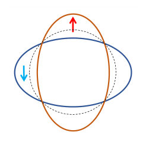
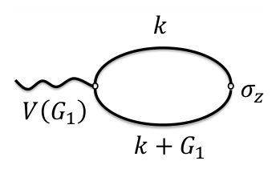
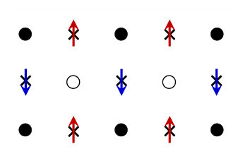
Summary. This paper demonstrates how the intrinsic d-wave symmetry of altermagnets translates into a periodic spin modulation in real space when a lattice potential is present. It provides a mathematical link between microscopic momentum-space multipoles and macroscopic real-space spin quadrupole orders. This establishes a physical connection between the topology of the Fermi surface and observable magnetic distributions.
Why it may be interesting. not directly relevant
Main problem. The paper aims to bridge the gap between momentum-space spin quadrupolar ordering and real-space staggered magnetic distribution in d-wave unconventional magnetic states (altermagnets).
Main result. The study establishes that a weak, non-magnetic crystal potential induces a spatial spin quadrupole distribution in real space, with a cross-susceptibility directly proportional to the momentum-space spin quadrupole moment.
Method. The authors use linear response theory and the Matsubara Green's function formalism to calculate the static spin-charge cross-susceptibility via a bubble diagram approach.
Model / system. A 2D continuum model for the d-wave alpha-phase (altermagnet) featuring spin-dependent elliptical Fermi surfaces, subjected to a weak, non-magnetic, periodic 2D square lattice potential.
Key observables. Static spin-charge cross-susceptibility (chi), real-space spin density distribution (Sz(r)), and momentum-space spin quadrupole moment (Qkx2).
Important parameters / regimes. d-wave order parameter (Q), Fermi momentum (kf), reciprocal lattice vector (G), and the low-electron-density regime (kf << G/2).
Assumptions / limitations. The analytical results assume a low-electron-density/dilute limit, zero temperature, and that the elliptical Fermi surfaces do not touch the Brillouin zone boundaries.
Figures summary. Fig 1 shows the distorted Fermi surface of the d-wave state; Fig 2 illustrates the relationship between the crystal potential and the induced spin response at potential saddle points.
Paper structure. The paper introduces the problem of momentum-to-real space mapping, defines the Hamiltonian and crystal potential, applies linear response theory and Green's functions, derives the analytical proportionality between susceptibility and quadrupole moment, and concludes with the physical implications for altermagnetism.
Unconventional magnetism represents a class of metallic states whose Fermi surfaces exhibit spin-dependent splittings under the non-trivial representations of the rotation group. The $d$-wave $α$-phase unconventional magnetic state, commonly known as altermagnet, recently, has attracted significant attention. While these systems exhibit distinct anisotropic $d$-wave characteristics in momentum space, how this microscopic topology translates into the spin distributions in real space remains a question. In this work, we bridge the intrinsic spin quadrupolar ordering in momentum space to the real-space staggered magnetic distribution. By introducing a weak, non-magnetic periodic crystal potential into a $d$-wave unconventional magnetic state, the spin-charge cross susceptibility is calculated by using the linear response theory. We reveal that the interplay between the crystal potential and the intrinsic $d$-wave spin-splitting naturally induces a spatial spin quadrupole distribution without enlarging the unit cell. Our study thus provides a physical connection between momentum-space multipoles in the even partial wave channel and real-space spin multipole orders.
Authors: Luhang Yang, Elbio Dagotto
Type: theory · Category: strongly correlated electrons · PDF: https://arxiv.org/pdf/2605.09705v1
Analysis basis: full PDF text, analyzed in chunks
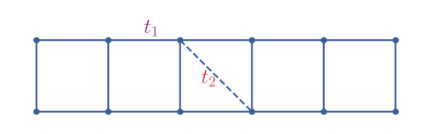
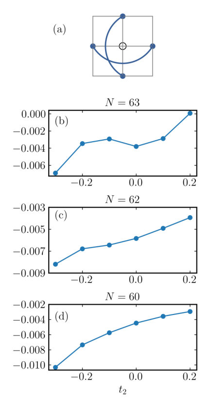
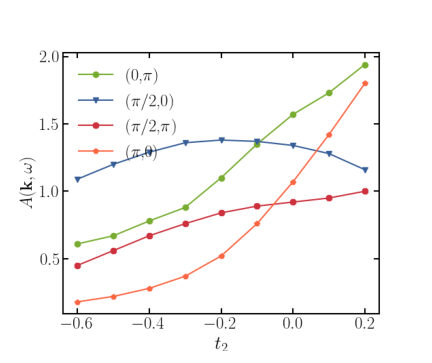
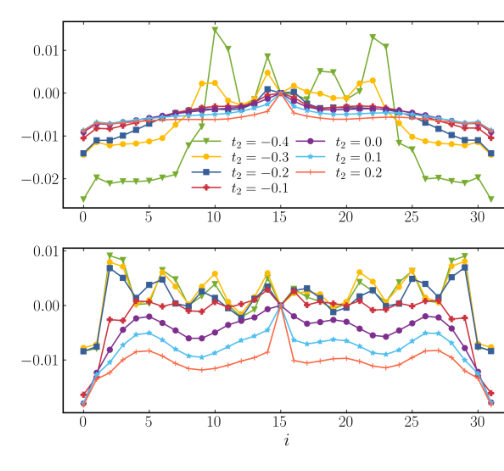
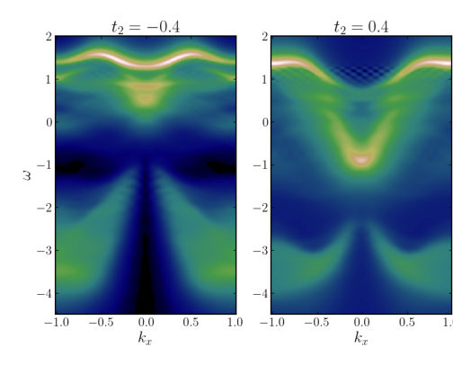
Summary. This paper investigates how spin-charge separation, a hallmark of 1D systems, can emerge in two-leg ladders. By using DMRG, the authors show that negative next-nearest-neighbor hopping can drive the system into a Luttinger liquid phase where spin and charge excitations become decoupled. This suggests that 1D-like fractionalized excitations may persist in higher-dimensional ladder geometries.
Why it may be interesting. not directly relevant
Main problem. Investigating the realization of spin-charge separation in two-leg ladders and determining the parameter regimes that drive the system from a gapped Luther-Emery phase into a gapless Luttinger liquid phase.
Main result. The study finds that negative next-nearest-neighbor hopping (t2) and hole doping promote spin-charge separation, potentially allowing 1D-like physics to persist in wider ladder systems.
Method. Density Matrix Renormal $Group$ (DMRG) and its time-dependent extension (tDMRG) were used to compute ground-state correlations and single-particle removal spectra.
Model / system. A two-leg t-J ladder model (t1-t2-J model) including nearest-neighbor hopping, next-nearest-neighbor hopping, and spin exchange.
Key observables. Spin-spin correlations across a hole, single-particle removal spectral functions, quasiparticle weight (Zk), spin gap, and polaron dispersion.
Important parameters / regimes. Next-nearest-neighbor hopping (t2), spin exchange (J), nearest-neighbor hopping (t1), and hole doping density.
Assumptions / limitations. The study focuses on the large-U Hubbard model physics via the t-J model and assumes the relevance of the 1D-like Luttinger liquid physics in these quasi-1D geometries.
Figures summary. Fig 1 shows the lattice structure; Fig 2 illustrates the 'spin across the hole' concept and correlations as a function of t2; Fig 8-10 show photoemission spectra and frequency cuts demonstrating spinon and holon dispersions; Fig 11 shows extrapolated spin gaps.
Paper structure. The paper introduces the problem of spin-charge separation in higher dimensions, describes the t-J ladder model and numerical methods, presents results on ground-state correlations and spectral functions, and concludes with implications for wider ladder systems.
Spin-charge separation is a hallmark of one-dimensional fermionic systems, yet its realization in higher dimensions remains an open question. To address this issue, we investigate a two-leg t-J ladder using the density matrix renormalization group (DMRG) method and its time-dependent extension. By analyzing ground-state correlations and single-particle removal spectra, we systematically examine the effects of plaquette diagonal hopping, spin exchange, and hole doping. Within appropriate parameter regimes, these factors drive the system from the well-known Luther Emery phase, with gapped spin and gapless charge modes, into a Luttinger liquid phase characterized by gapless spin and charge excitations, where signatures of spin-charge separation emerge. In combination with previous studies using exact diagonalization, our results provide evidence that spin-charge separation may persist in wider ladder systems.
← Index · ← Previous · Next →